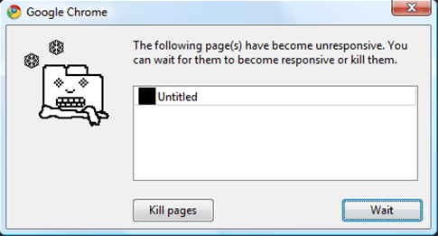

What is a Service Worker?
Web Workers API

An API for running scripts in the background independently of any user interface scripts
Workers are expected to be long-lived, have a high start-up performance cost, and a high per-instance memory cost
Types of Web Workers
- Shared Workers
- Audio Workers
- Service Workers
What Problems do Service Workers solve?
- Offline experience
- Weak connections
- Reliance on strong continuous bandwidth
- Traffic to web servers
- Customer engagement via notifications (limited support)
- Background sync (limited support)
- Need to support multiple native apps?
Bounce rates

As page load time goes from:
- 1s to 3s - probability of bounce ↑ 32%
- 1s to 5s - probability of bounce ↑ 90%
- 1s to 10s - probability of bounce ↑ 123%
Source: Google/SOASTA Research 2017
Waiting isn't Easy
Credit: Mo WillemsTypical Network Request
Failure and frustration
- No nearby cell tower
- Flaky Wifi
- Traffic spikes, e.g a major event
- ISP trouble
- Power outage
- Site server is down
Request with Service Worker
Fetch event
addEventListener('fetch', fetchEvent => {
// If fetch is successful, return results.
// …
// If fetch fails, return cached content.
// …
});
What Problems do Service Workers not solve?
- First visit experience
- Caching complexity
- Simplifying skillsets for site maintenance
Requirements
- Compatible browser
See caniuse.com/#feat=serviceworkers
(Browsers that support Service Workers also support ES6.) - HTTPS
- Same origin policy
Service Worker Lifecycle
First site visit
- Download
- Install
- Activate
Updated Service Worker
- Download
- Install
- Waiting
Until all windows or tabs are closed. - Activate
Working asynchronously: Promise API
A promise can either be fulfilled (resolved) or rejected.
developers.google.com/web/fundamentals/primers/promisesCreating a Promise
var promise = new Promise((resolve, reject) => {
// Do something, e.g. fetch a file from the network.
if (/* everything turned out fine */) {
resolve("Stuff worked!");
}
else {
reject(Error("It broke"));
}
});
Using a Promise
promise
.then(result => {
console.log(result); // "It worked!"
})
.catch(error => {
console.log(error); // Error: "It broke."
});
Promises can be chained
promise
.then(result => {
console.log(result); // "It worked!"
})
.then(data => {
console.log(data); // "Do something afterwards."
})
.catch(error => {
console.log(error); // Error: "It broke."
});
Promise-based APIs
- Fetch API
- Cache API
Fetch API
fetch(request)
.then(responseFromFetch => {
console.log(responseFromFetch); // "It fetched the thing!"
})
.catch(error => {
console.log(error); // Error: "It failed."
});
Fetch user info from GitHub
fetch('https://api.github.com/users/amanire')
.then(response => {
return response.json()
})
.then(data => {
console.log(data);
})
.catch(err => {
console.error(err);
})
Cache API
Understanding Cache Lifetimes
Cache instances are not part of the browser’s HTTP cache…
Updates must be manually managed
authors should version their caches by name…w3c.github.io/ServiceWorker/#cache-lifetimes
Browser Caching
- Memory cache
- Service Workers cache
- Disk (HTTP) cache
Caches property
(instance of CacheStorage)
caches.open(cacheName)
.then(cache => {
// Do something with your cache
});
Cache methods
cache.add()cache.put()cache.match()cache.keys()cache.delete()
Add single offline HTML file to cache
caches.open(cacheName)
.then(cache => {
return cache.add('offline.html');
})
Building a Service Worker
- HTTPS (or localhost for development)
- Register service worker
- Service worker JavaScript file
- Caching strategy
HTTPS
Register Service Worker
/index.html
via inline script tag
<script>
if ('serviceWorker' in navigator) {
navigator.serviceWorker.register('/serviceworker.js');
}
</script>
No modern JavaScript here!
Progressive enhancement
Service worker file is ignored if unsupported by browser.
Scope
<script>
if (navigator.serviceWorker) {
navigator.serviceWorker.register('/serviceworker.js',
{scope: '/app/'}
);
}
</script>
Service Worker file
/serviceworker.js
Versioned cache name
const version = 'V0.1';
const cacheName = 'MySWCache' + version;
Events
addEventListener('install', installEvent => {// …});
addEventListener('activate', activateEvent => {// …});
addEventListener('fetch', fetchEvent => {// …});
addEventListener('install', installEvent => {
// Cache stuff for later
});
addEventListener('activate', activateEvent => {
// Cleanup caches
});
addEventListener('fetch', fetchEvent => {
// Return fetched or cached stuff
});
Install event
addEventListener('install', installEvent => {
// Cache stuff for later
});
// cacheName == 'MySWCacheV0.1'
addEventListener('install', installEvent => {
installEvent.waitUntil(
caches.open(cacheName)
.then(cache => {
return cache.addAll([
'offline.html',
'styles.css'
]);
})
);
});
Activate event
addEventListener('activate', activateEvent => {
// Cleanup caches
});
// Delete old cacheName != 'MySWCacheV0.1'
addEventListener('activate', function (event) {
activateEvent.waitUntil(
caches.keys()
.then(cacheNames => {
return Promise.all(
cacheNames.map( cacheNameKey => {
if (cacheNameKey != cacheName) {
return caches.delete(cacheNameKey);
}
})
);
})
);
});
Fetch event
Fresh HTML, cached assets
addEventListener('fetch', fetchEvent => {
// - Fetch HTML file from network
// If error, return offline fallback
//
// - Get all other assets from cache
// If not in cache, fetch from network
});
addEventListener('fetch', fetchEvent => {
// Fetch HTML file from network
const request = fetchEvent.request;
if(request.headers.get('Accept').includes('text/html')) {
fetchEvent.respondWith(
fetch(request)
.then(responseFromFetch => {
return responseFromFetch;
})
// If error, return offline fallback
.catch(error => {
return caches.match('/offline.html');
})
);
return;
}
// …
// Get all other assets from cache
fetchEvent.respondWith(
caches.match(request)
.then(responseFromCache => {
if(responseFromCache) {
return responseFromCache;
}
// If not in cache, fetch from network
return fetch(request);
})
)
});
Caching strategy
Serve cached assets on time out
addEventListener('fetch', fetchEvent => {
// - If the network fails or the response is not served before timeout,
// reject the network request and return the cached version.
//
// - Otherwise, fullfill the promise and
// return fetched file from network
});
Caching strategy
Dynamic responsive image strategy
addEventListener('fetch', fetchEvent => {
// Clone the request
// Check if the image is a jpeg
// Inspect the accept header for WebP support
// If we support WebP
// Build the return URL
});
Tips and Gotchas
Chrome developer tools
Developer tools
Set console context to Service Worker
Don't wait for user to reload
Force the new waiting service worker to become the active service worker
- Add SkipWaiting() to Install event
- Chain clients.claim() to Activate event
Lighthouse

Audits for performance, accessibility, progressive web apps, and more.
Progressive Web Apps
- Responsive
- Connectivity independent
- App-like-interactions
- Fresh
- Safe
- Discoverable
- Re-engageable
- Installable
- Linkable
Alew Russell & Frances Berriman
infrequently.org/2015/06/progressive-apps-escaping-tabs-without-losing-our-soul/
Any site can be a PWA
- HTTPS
- Service Worker
- Manifest JSON file
Jeremey Keith
adactio.com/journal/13884
Drupal Solutions
Offline Core
events.drupal.org/vienna2017/sessions/offline-core
Add a progressive web app module to core
drupal.org/project/ideas/issues/2830668
Service Worker module
Abandoned, no official release
Service Worker Registration module
8.x-1.0 Release, single maintainer
Progressive Web App module
Fully working D8 version based on D7 Serviceworker
drupal.org/project/pwa/issues/3060759
Advanced Progressive Web App module
8.x-1.0 Release, incorporates push notifications
Resources
Thank you
Aaron Manire